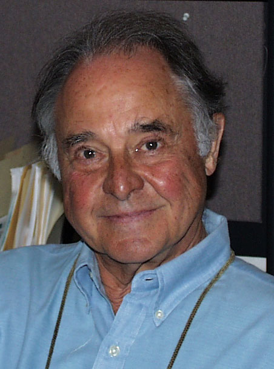
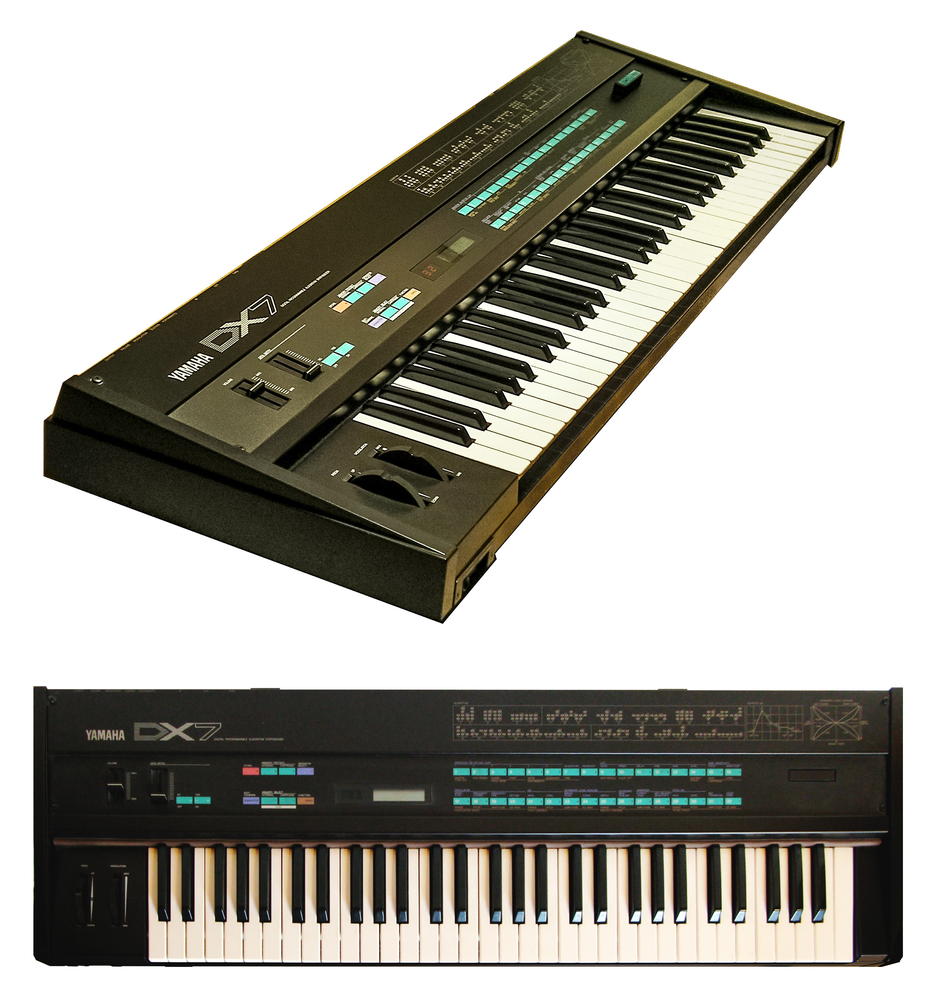
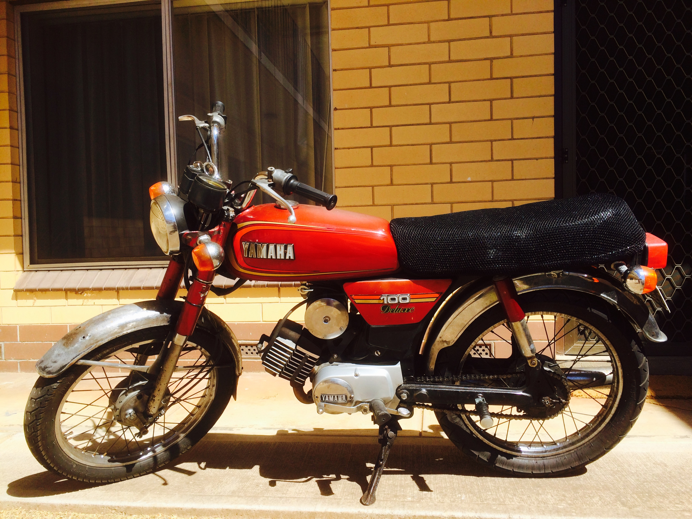
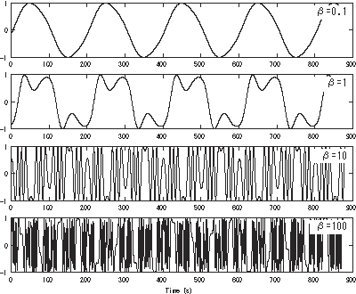
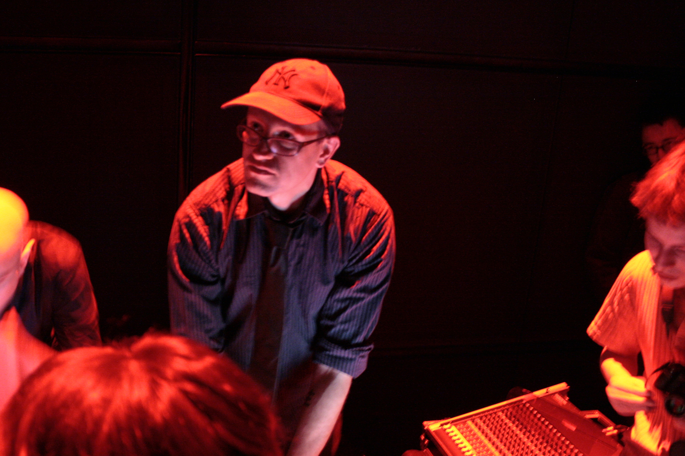

Companion reading — Episode 1
2026
Companion reading for Episode 1 of Ableton Live Mastery.
A walking-podcast on what FM synthesis is, where it came from, and how Ableton’s Operator is the descendant of every machine on these pages. Read alongside the episode, or after.

In 1967, in the basement of the Stanford Artificial Intelligence Lab, John Chowning was trying to make a sound wobble. He turned the wobble up. He turned it up further. And somewhere around twenty cycles per second, the wobble disappeared — and an entirely new spectrum appeared in its place.
What he had stumbled into was Frequency Modulation: when you modulate one oscillator’s pitch with another, fast enough to cross into audio rate, the result isn’t vibrato anymore — it’s a brand-new harmonic series, sidebands spreading outward from the carrier at integer multiples of the modulator frequency. The math, eventually, was the math of Bessel functions.
Chowning published his paper in 1973 (The Synthesis of Complex Audio Spectra by Means of Frequency Modulation, JAES). Stanford patented the technique. The American keyboard manufacturers — Hammond, Wurlitzer, Lowrey — all said no. Yamaha, in 1974, said yes, and paid the largest royalty stream in Stanford’s patent-office history.

The DX7 was the first commercially successful all-digital synthesizer. Six operators, 32 algorithms, 16-voice polyphony, no analog filter — just arithmetic, pure FM. It launched at $1,995 in 1983 and sold over 200,000 units. Whitney Houston, Phil Collins, Brian Eno, Hall & Oates, Stevie Wonder — for half a decade after the DX7 hit shelves, the sound of a pop record was the sound of a DX7.
The factory presets — E.PIANO 1, FANTASY, BASS 1 — became reflexes: listeners didn’t know they were hearing FM, they were just hearing the eighties. The four-page LCD menu structure made deep editing nearly impossible, which is why most DX7s in studios across the world ran the same factory bank, which is why so many records sound like they share a synth. They did.
The DX7 also broke the working keyboardist’s mental model. There was no oscillator-filter-VCA. There were operators. There were algorithms. There was modulation index — a number — and it determined brightness directly, not by turning a knob labeled CUTOFF. A whole generation of patch designers had to start over.
The TX81Z was Yamaha’s third 4-operator FM module — half the operators of the DX7, fraction of the price, sat in a single rack space, controlled entirely by MIDI. It shipped with 128 factory presets including one that would outlive the entire decade: Lately Bass, preset P1-08.
Once the DX7’s prestige collapsed in the early-90s analog-revival backlash, the TX81Z stayed cheap on the second-hand market — $80 for a working unit — and got picked up by every Detroit techno producer, IDM head, and house loop-builder who needed a deep, harmonically-rich bass that wasn’t a 303 or a Moog. Lil Louis dropped it on French Kiss. Kerri Chandler made it sing. Squarepusher hammered it.
The interface was cruel: two-row LCD, six buttons, parameter scrolling that took thirty seconds to get to anything. Nobody minded. The TX81Z became an ingredient — programming was for masochists; you used what was there. Ableton Operator, twenty years later, would explicitly target this form factor: 4-operator FM, all parameters on screen at once, no LCD.

The DX100 was the home-keyboard cousin of the TX81Z — a 49-key 4-op FM synthesizer with a strap button on the side, a built-in speaker, and a $445 price tag. Aimed at hobbyists, it ended up in the hands of every broke producer who couldn’t afford a DX7. Aphex Twin had one. So did Squarepusher. So did half the Warp Records roster.
Whatever you have to say about the Lately Bass mythology, the more interesting historical thread is that the entire bottom of the IDM world was scaffolded on cheap 4-operator hardware: people who couldn’t afford the canonical machine but wanted the canonical sound, who learned FM the slow way through the toy version. The texture you hear in Selected Ambient Works 85-92 — the cracked, dust-flecked, harmonically-dense pad work — that’s a DX100 a teenager couldn’t afford to replace.

What FM produces is sidebands: pairs of partials sitting at the carrier frequency plus and minus integer multiples of the modulator frequency. As the modulation index (the modulator’s amplitude) goes up, more sidebands appear, the spectrum gets brighter, and the energy distribution follows the shape of the Bessel functions of the first kind.
Two consequences fall out of this:

Robert Henke — half of Monolake, co-author of the Ableton Live engine — sat down in 2003 with a copy of the Chowning paper and a directive from Ableton’s design team to build a synthesizer that fit the company’s philosophy: minimal interface, immediate response, every parameter on screen at once. The result, shipped with Live 4 in 2004, was Operator: 4 operators, 11 algorithms, no menus, no LCD, no preset-burning culture.
The design choices it made tell you the lineage:
A 4-operator FM synthesizer that ships with every copy of Live since version 4. The core architecture:
The patch I’ll build in the second half of the episode (Polynomial-Bell) uses Algorithm 1, three sine operators, a √2 modulator ratio, a touch of feedback, the OSR-circuit lowpass at 8 kHz, 12% spread, and an envelope shaped to pluck. Same patch family Aphex used on Polynomial-C. Same patch family the original CCRMA bell synthesis demos produced in 1973.
You can build it in twenty minutes. Whether you can use it — that’s the two-decade-long argument the rest of the course is about.
{Image credits: John Chowning (Wikimedia Commons / public domain). Yamaha DX7 (Wikimedia Commons / Robert Carney, CC BY-SA 4.0). Yamaha DX100 (Wikimedia Commons / Steve Sims, CC BY-SA 3.0). Frequency-modulation spectrum diagram (Wikimedia Commons / public domain). Robert Henke (Wikimedia Commons / Hideo Schwartz, CC BY-SA 3.0).}